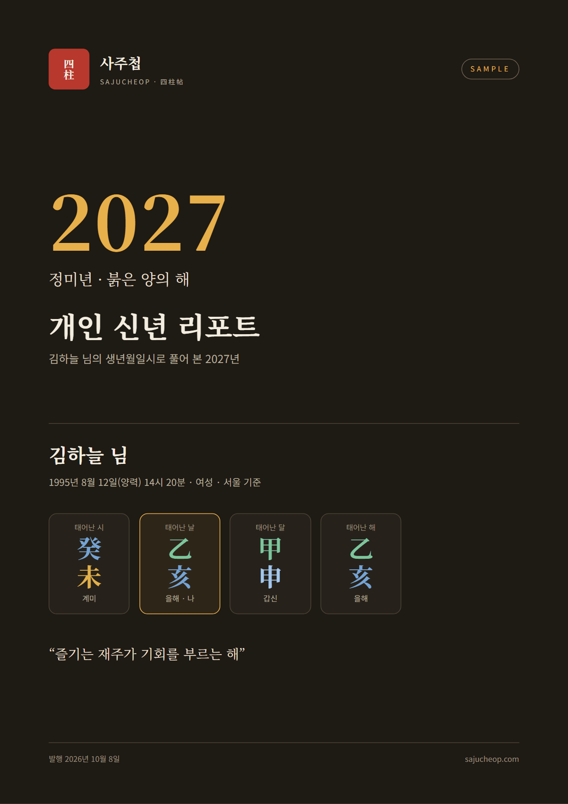
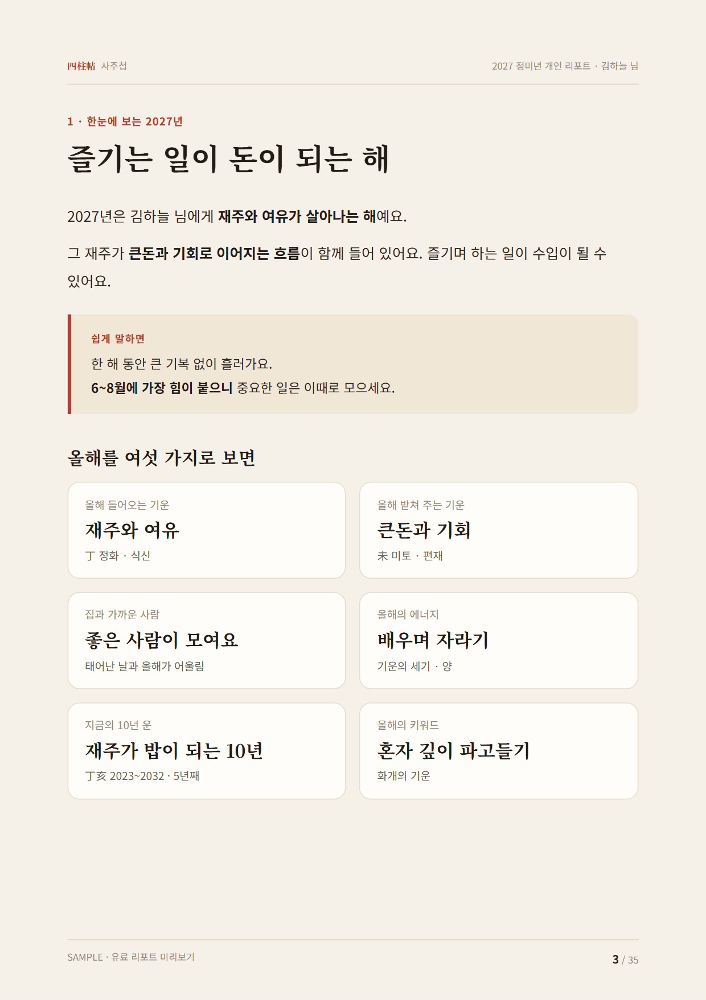
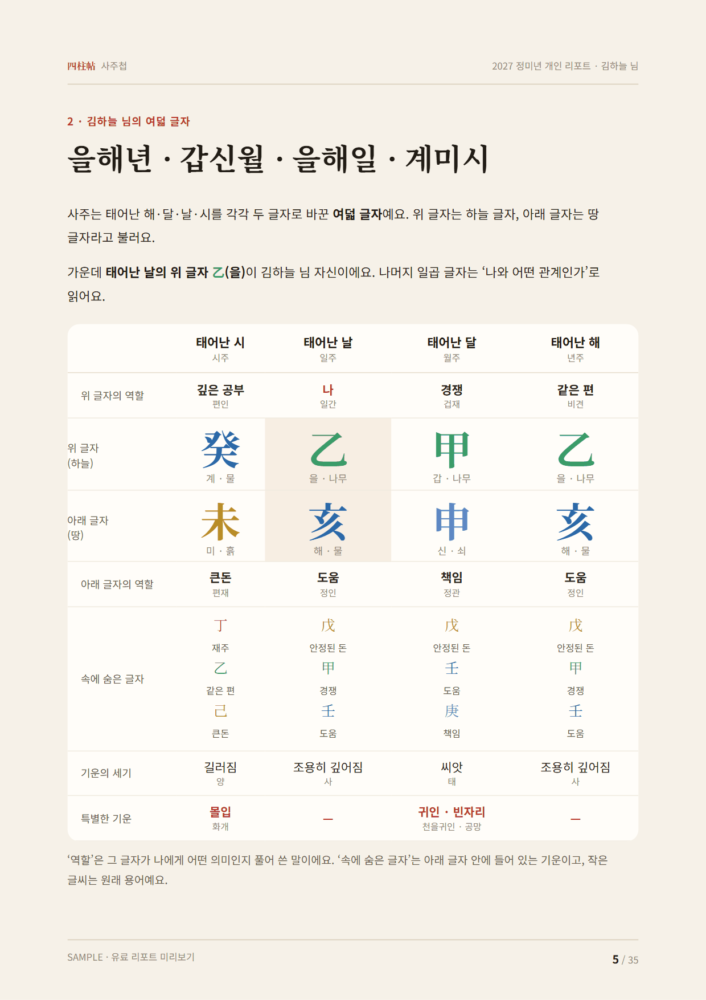
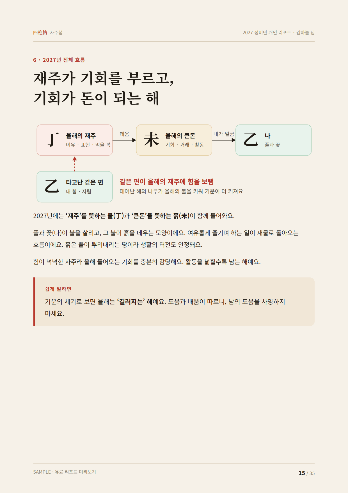
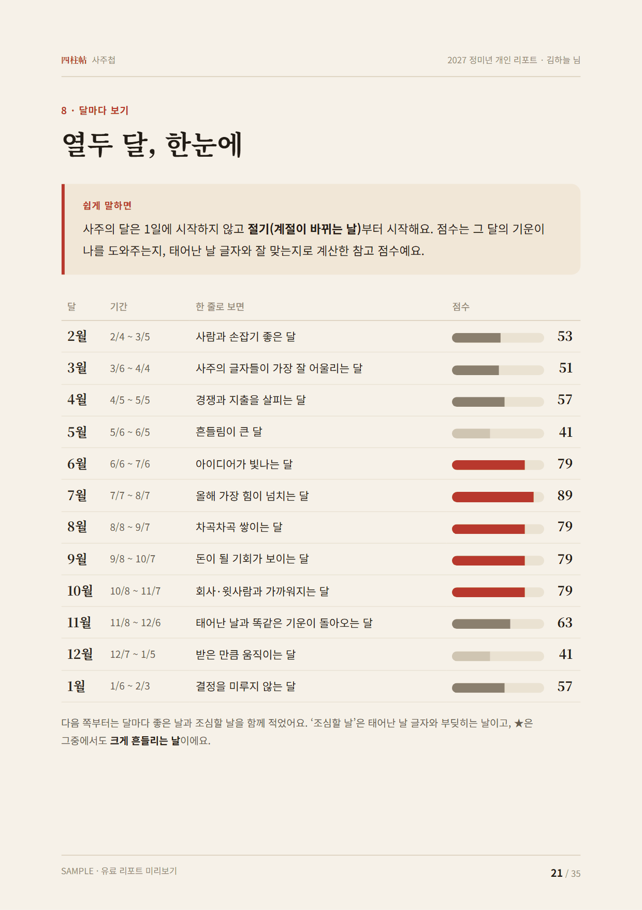
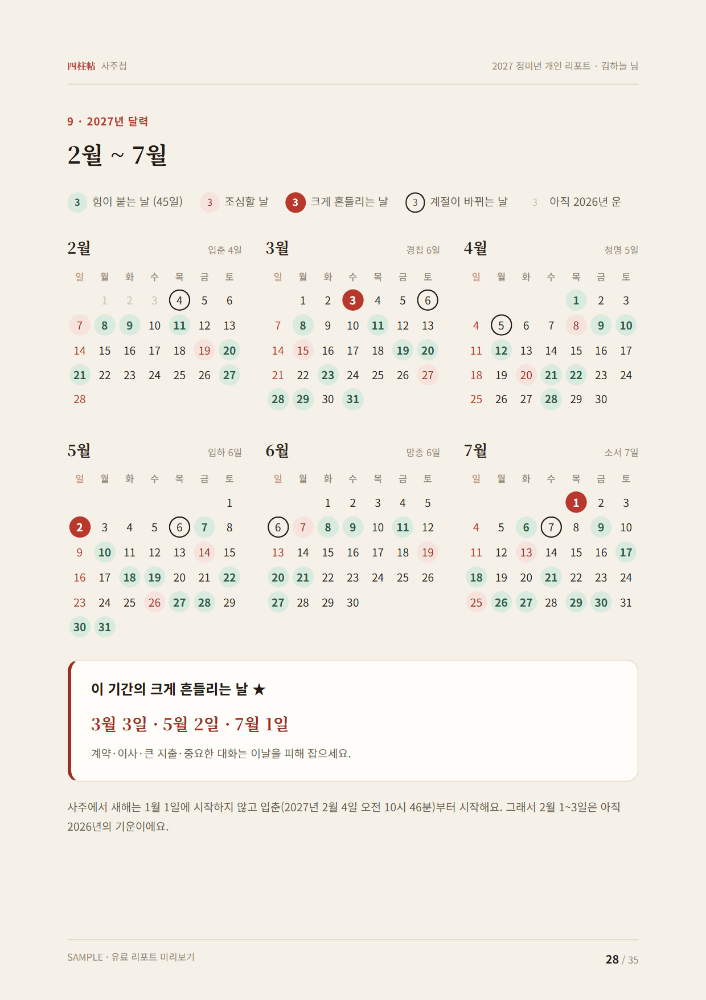

생년월일시 여덟 글자로 2027년을 처음부터 끝까지 풀어 쓴 35쪽 PDF예요. 띠나 일주 하나로 보는 무료 운세와 달리 여덟 글자 전체와 지금 지나는 10년 운(대운)을 함께 읽고, 2027년 365일에 하루하루 점수를 매겨 좋은 날을 골라 드려요.
무엇이 들어 있나요
- 한눈에 보는 2027년올해를 두 쪽으로
- 내 여덟 글자사주표 · 다섯 가지 기운 · 역할
- 나라는 사람성격과 강점
- 사주 속 관계와 특별한 기운잘 맞는 글자, 부딪히는 글자
- 10년마다 바뀌는 큰 운지금과 다음 10년
- 2027년 전체 흐름올해의 기운과 내 사주
- 분야별 2027년일 · 돈 · 사랑 · 건강 · 공부
- 달마다 보기2027년 2월부터 2028년 1월까지 열두 달
- 2027년 달력좋은 날과 조심할 날
- 일의 종류별 좋은 날계약 · 이사 · 거래 · 만남
- 2027년 실천 가이드힘이 되는 것 · 할 일 · 피할 일
- 부록용어 풀이와 계산 기준
샘플 미리보기





가상 인물 김하늘 님(1995년 8월 12일 14시 20분, 여성)으로 만든 샘플의 일부예요.
무료 운세와 무엇이 다른가요
| 사주첩 무료 운세 | 2027 개인 리포트 | |
|---|---|---|
| 기준 | 띠나 일주 하나 | 여덟 글자 전체와 지금의 10년 운 |
| 같은 띠·일주끼리 | 같은 내용 | 사람마다 다른 내용 |
| 날짜 | 오늘·이번 달 중심 | 2027년 365일 점수와 일의 종류별 좋은 날 |
| 형태 | 웹페이지 | 이름이 들어간 35쪽 PDF, 인쇄용 판형 |
주문 방법
- 구매하기를 눌러 결제해요. 결제는 해외 결제대행 Gumroad가 처리하고 한국 카드로 결제할 수 있어요.
- 결제 완료 화면과 확인 메일에 나오는 구매 코드를 복사해요.
- 리포트 만들기 화면에 구매 코드와 이름, 성별, 생년월일, 태어난 시각을 넣으면 몇 초 만에 리포트가 열리고 바로 PDF로 저장할 수 있어요.
자주 묻는 질문
태어난 시각을 몰라도 되나요?
네. 시각을 모르면 여덟 글자 가운데 태어난 시의 두 글자를 빼고 여섯 글자로 계산해요. 시주에 기대는 풀이 몇 곳이 줄어들고, 리포트 안에 그 점을 적어 드려요.
음력 생일도 되나요?
네. 한국천문연구원 음력 기준으로 양력으로 바꿔 계산해요. 윤달에 태어났다면 꼭 윤달이라고 알려 주세요.
개인정보는 어떻게 다루나요?
생년월일은 리포트를 만드는 순간에만 쓰고 저장하지 않아요. 구매 코드 하나를 여러 사람이 쓰지 못하게 생년월일에서 만든 되돌릴 수 없는 서명값만 남겨요. 사주첩의 무료 계산기는 지금처럼 브라우저 안에서만 계산해요.
다시 받을 수 있나요?
네. 같은 구매 코드와 같은 생년월일로 언제든 다시 만들 수 있어요. 이름은 자유롭게 고칠 수 있고, 생년월일을 잘못 넣었다면 두 번까지 바꿀 수 있어요. 한국어판과 영어판 모두 만들 수 있어요.
환불되나요?
리포트를 만들기 전이면 전액 환불해 드려요. 사람마다 따로 만드는 디지털 상품이라 만든 뒤에는 환불이 어렵지만, 계산이나 정보에 오류가 있으면 고쳐 드려요. 인스타그램 @sajucheop 으로 알려 주세요.
리포트 내용은 정해진 미래인가요?
아니에요. 전통 명리학의 규칙으로 읽은 참고용 풀이예요. 건강·법률·투자 같은 중요한 결정은 전문가와 상의해 주세요.
궁금한 점은 인스타그램 @sajucheop 다이렉트 메시지로 물어봐 주세요. 무료로 먼저 보고 싶다면 사주 풀이 계산기와 2027 띠별 운세가 있어요.